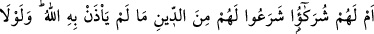
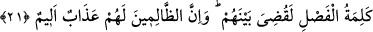

Kim bu zâhirî keramet/ikramlarla meşgul olursa, bunlar onu haktan perdeler. Ârifin
dünya ekini Allah’ın mârifeti, muhabbeti ve hizmetidir. Yoksa mârifet ehline göre tüm
kâinat bir zerre bile değildir.
Bazıları bu âyete şöyle bir mânâ vermişlerdir: Kim Allah sevgisinden dolayı Allah
için amel eder de ameline hiçbir karşılık beklemezse, Allah’tan başka her şey onun
nezdinde küçülür. Bu kişi ne dünya ekini ne de âhiret ekini ister. Bilakis dünya ve
âhirette sadece Allah’ı ister.
Sehl şöyle demiştir. Dünya ekini kanâat, âhiret ekini ise rızâdır.
Yine Sehl der ki: Âhiret ekini dünyada kanâat, âhirette mağfiret, bütün hallerde
Allah’tan râzı olmaktır. Dünya ekini ise dünyadan hâcetini görmek, onu toplayıp
stoklamak ve onunla övünmektir. Kim bu durumda olursa onun âhirette nasibi olmaz.
Şeyh Attar (k.s.) şöyle der:
Çocuklar gibi sarıya kırmızıya bakma,
Kadınlar gibi boya ve kokuyla mağrur olma.
Dünya yaşlı bir kadın gibidir. Kim dünya zînet ve yaldızlarıyla övünürse o kişi kadın
hükmündedir. Akıllı kişi sâlih ve bâki amellerle âhiret rütbesini elde edendir. Zîrâ
dünya ve içindeki her şey yok olmaya mahkûmdur.
Nitekim Şâir Lebid şöyle demiştir:
Bilin ki; Allah’tan başka her şey bâtıldır.
Ve bütün nimetler elbette yok olmaya mahkûmdur.
Tabiî ki buradaki nimetlerden maksad, fâni dünya nimetleridir.
21. Yoksa onların, Allah’ın izin vermediği bir dîni getiren ortakları mı var? Eğer
erteleme sözü olmasaydı, derhal aralarında hüküm verilirdi. Şüphesiz zalimlere
can yakıcı bir azap vardır.
“Yoksa onların” müşriklerin kendilerine, “Allah’ın izin vermediği” şirki kabul,
dirilişi inkâr, yalnız dünya için çalışma ve İslâm’a muhâlif nefse muvafık işleri emretme
gibi bozuk “bir dîni getiren” şeytanlardan “ortaklar mı var?”
Ortaklardan maksad, ins ve cin şeytanlarıdır. “Hüm” zamiri Kureyş müşriklerini ifâde
etmektedir. Mânâ şöyledir: “Yoksa onların şeytanlardan dostları mı var? Yani küfür ve
isyanda onlara ortak olan ve bu durumu süsleyip tahrik eden ve bu konuda onlara